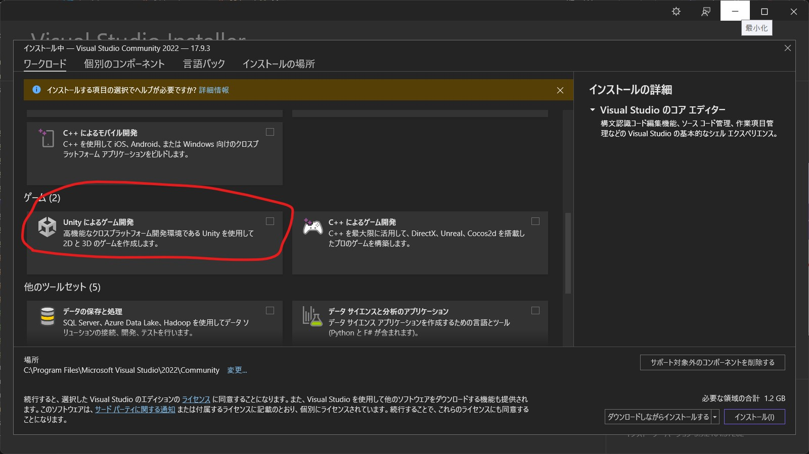

Visual Studioのセットアップ
Visual StudioはUnityで用いるC#を使用するのに必要なコードエディタです。Visual StudioのほかにもVisual Studio Codeが使えます。圧倒的にいばらの道になりますがサクラエディタなども一応コードエディタとして使えます。
今回はUnity用のモジュールがあって補完入力をしてくれるVisual Studioを使います。
1.インストーラーを入手しにいく
Visual Studio 2022インストーラーダウンロードサイト上のリンクのサイトにアクセスすると次のようなページが出てくると思います。
そうしたら赤い丸で囲った左側の紫のほうのダウンロードボタンを押してください

そうするとこのような感じにドロップダウンリストが出てくるかと思うのでCommunity2022を選んでください。
そうしたらダウンロードフォルダにあるインストーラーを起動させます。管理者権限が要求されると思います。学校で支給されるノートパソコンで試したことがないので断言できませんが、管理者権限が必要だった場合は先生に問い合わせてください。
2.インストールする
インストーラーを起動させるとこのような画面が出てきます。続行をクリックしてください。
そうするとインストーラーのインストーラーが起動するのでしばらく待ってください。
Unity開発用モジュールのインストール
お茶でも飲んでしばし待ってるとどのパッケージをインストールするのか聞かれる画面が出てきます。
スクロールするとゲームというカテゴリの中にUnityによるゲーム開発という項目があるのでチェックを入れます。2.55GB持っていかれますがそれ以上の価値があるので右下にあるインストールをクリックします。その隣にあるのはインストールの手順のオプションですが変えても大して差はないのでそのままインストールを押しても構いません。
2.6GBくらいあるのでインストールが完了するまで結構長めに待たされます。別のことでもして待っていましょう。
今回、筆者は初回インストールではなかったので再現することができませんでしたが、本来であればマイクロソフトのアカウントでログインしないか?と言われたはずです。ですが、別にログインしなくても使えるので後でを選べば開発が始められます。
Unity以外のプロジェクトの場合ほかのデバイスでも作業できるようになるみたいです。GitとGitHubを使えば簡単に別デバイス間でプロジェクトを共有できるのでわざわざマイクロソフトアカウントを作る必要性はないです。
これでインストールするソフトウェアは一通りインストールできました。お疲れさまでした。